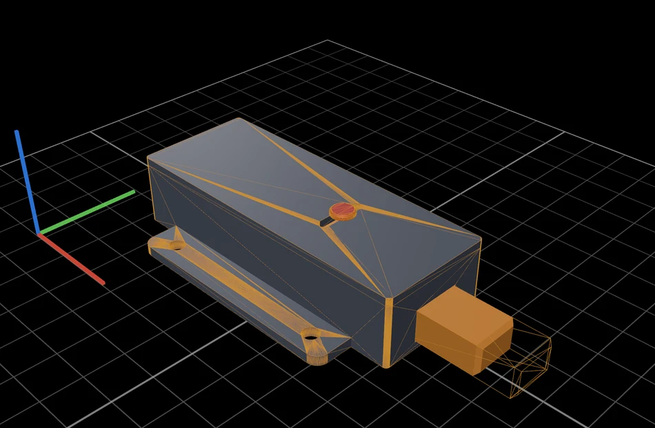
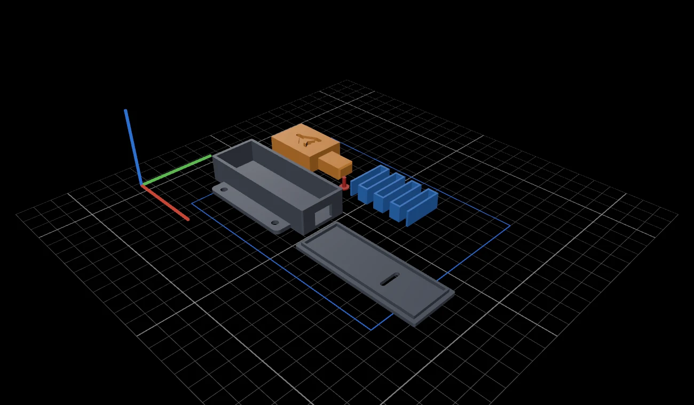

Every change is a version.
“Make the nose stick out 25 mm.” Version 2 lands next to version 1, outlined in orange. Go back any time: the chat and what the agent remembers come back too.

Describe a part. Print it.
Parametric CAD, written and run by the coding agent on your Mac.

This push-to-open latch was made in CAD Studio from one prompt.
You type
A fully 3D-printed push-to-open latch for a drawer, about 80 mm long. A heart-shaped cam, a printed spring, four colors. Animate a full cycle.
9 minutes later, it clicks. Simulated, collision-checked, ready to print.
Every step streams into the chat as it happens: the code being written, the model being built, the drawing being checked. The 3D view, the parameters and the technical drawing land the moment the files do.
A fully 3D-printed push-to-open latch for a drawer, about 80 mm long: a housing with a lid, a plunger with a heart-shaped cam groove, a follower pin and a printed serpentine spring. Give it four colors so each part stands out. Animate a full cycle: push to latch, push again and the spring pushes it back out.
Writing the model · 843 lines
Checking the drawing
Drawings are almost done; one callout still overlaps an edge, so I'm moving it.
Editing the model
I've built the latch. It's an 80 × 30 mm housing with screw flanges and a lid, a plunger with a heart-shaped cam groove that sticks out 18.5 mm, a sliding follower pin, and an 8-beam printed serpentine spring.
Simulated cycle: the first push goes in 15 mm and the plunger holds at 12 mm. The second push releases it and the spring returns it fully, with no collisions. Spring force runs from about 2.4 N at rest to about 11.3 N fully pushed.

Assembled, exploded or laid out on your print bed. Hide a part, keep two together, open the plate in your slicer.
Ask for an animation and the agent simulates the mechanism: the spring, the cam and the push of your finger. The real solids are checked for collisions in every frame.
Rest
An ISO first-angle drawing comes with every model. The latch got six: the assembly with its parts list, then one sheet per part, all in a single PDF.


Click two points for the distance and its X, Y and Z deltas. Slide a section plane along any axis to see inside, down to the cam groove and the spring.


“Make the nose stick out 25 mm.” Version 2 lands next to version 1, outlined in orange. Go back any time: the chat and what the agent remembers come back too.

Every part laid flat in its print orientation, with 0.2 mm of play between the sliding parts.

Straight from the latch's parameters and simulation.
One click exports the lot as a ZIP.
CAD Studio runs the agent you already use, in a folder you choose. No accounts, no servers, nothing uploaded by the app.
Paste a screenshot with ⌘V, or drop in a sketch, a photo, a PDF drawing or the STEP of the part it has to fit. The agent measures what it can instead of guessing.
Keep typing while it works. Messages wait in a queue and go out one by one as each version finishes. If something fails, the queue pauses for you.
One app, from the first sentence to the file on your print bed.
CAD Studio has no AI of its own and no account to make. It drives the coding agent already signed in on your Mac, with your plan, and you can switch agents in Settings at any time.
In words, with pictures or with the file it has to fit. In millimeters or inches.
A parametric script with every dimension as a named parameter, plus the drawing and the simulation.
The model is built right on your Mac. The agent looks at the drawings it produced and fixes what is wrong.
Ready for your slicer, your CAD app and your workshop, in a folder you own. Nothing leaves your Mac through the app.
Works with
Choose the model and the reasoning effort in Settings.
Install Claude Code and run claude once, or install Codex and run codex login. CAD Studio uses your plan.
Drag it into Applications. It isn't notarized yet, so allow it in Privacy & Security, or run:
xattr -dr com.apple.quarantine "/Applications/CAD Studio.app"Pick your printer and units, and say what you need. Everything else is set up for you on first launch.